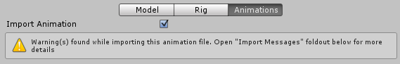

Animation tab
Animation Clips are the smallest building blocks of animation in Unity. They represent an isolated piece of motion, such as RunLeft, Jump, or Crawl, and can be manipulated and combined in various ways to produce lively end results (see Animation State Machines, Animator Controller, or Blend Trees). You can select Animation Clips from imported FBX data.
When you click on the model containing animation clips, these properties appear:

There are four areas on the Rig tab of the Inspector window:
- (A) Asset-specific properties. These settings define import options for the entire Asset.
- (B) Clip selection list. You can select any item from this list to display its properties and preview its animation. You can also define new clips.
- (C) Clip-specific properties. These settings define import options for the selected Animation Clip.
- (D) Animation preview. You can playback the animation and select specific frames here.
Asset-specific properties

These properties apply to all animation clips and constraints defined within this Asset:
| Property: | Function: | |
|---|---|---|
| Import Constraints | Import constraints from this asset. | |
| Import Animation | Import animation from this asset. Note: If disabled, all other options on this page are hidden and no animation is imported. |
|
| Bake Animations | Bake animations created using IK or Simulation to forward kinematic keyframes. Only available for Autodesk® Maya®, Autodesk® 3ds Max® and Cinema 4D files. |
|
| Resample Curves | Resample animation curves as Quaternion values and generate a new Quaternion keyframe for every frame in the animation. This option is enabled by default. Disable this to keep animation curves as they were originally authored this only if you're having issues with the interpolation between keys in your original animation Only appears if the import file contains Euler curves. |
|
| Anim. Compression | The type of compression to use when importing the animation. | |
| Off | Disable animation compression. This means that Unity doesn't reduce keyframe count on import, which leads to the highest precision animations, but slower performance and bigger file and runtime memory size. It is generally not advisable to use this option - if you need higher precision animation, you should enable keyframe reduction and lower allowed Animation Compression Error values instead. | |
| Keyframe Reduction | Reduce redundant keyframes on import. If selected, the Animation Compression Errors options are displayed. This affects both file size (runtime memory) and how curves are evaluated. | |
| Keyframe Reduction and Compression | Reduce keyframes on import and compress keyframes when storing animations in files. This affects only file size - the runtime memory size is the same as Keyframe Reduction. If selected, the Animation Compression Errors options are displayed. | |
| Optimal | Let Unity decide how to compress, either by keyframe reduction or by using dense format. Only for Generic and Humanoid Animation Type rigs. |
|
| Animation Compression Errors | Only available when Keyframe Reduction or Optimal compression is enabled. | |
| Rotation Error | How much to reduce rotation curves. The smaller the value, the higher the precision. | |
| Position Error | How much to reduce position curves. The smaller the value, the higher the precision. | |
| Scale Error | How much to reduce scale curves. The smaller the value, the higher the precision. | |
| Animated Custom Properties | Import any FBX properties that you designated as custom user properties. Unity only supports a small subset of properties when importing FBX files (such as translation, rotation, scale and visibility). However, you can treat standard FBX properties like user properties by naming them in your importer script via the extraUserProperties member. During import, Unity then passes any named properties to the Asset postprocessor just like 'real' user properties. |
Clip selection list

You can perform these tasks in this area of the Rig tab:
- Select a clip from the list to display its clip-specific properties.
- Play a selected clip in the clip preview pane.
- Create a new clip for this file with the add (
+) button. - Remove the selected clip definition with the delete (
-) button.
Clip-specific properties

This area of the Rig tab displays these features:
- (A) The (editable) name of the selected clip
- (B) The animation clip timeline
- (C) Clip properties to control looping and pose
- (D) Expandable sections for: defining curves, events, masks, and motion roots; and viewing messages from the import process
You can set these properties separately for each animation clip defined within this asset:
| Property: | Function: | |
|---|---|---|
| Area A (editable name) | ||
 |
The take in the source file to use as a source for this animation clip. This is what defines a set of animation as separated in Motionbuilder, Autodesk® Maya® and other 3D packages. Unity can import these takes as individual clips. You can create them from the whole file or from a subset of frames. |
|
| Area B (timeline features) | ||
 |
You can use the drag the start and end indicators around the timeline to define frame ranges for each clip. | |
| Start | Start frame of the clip. | |
| End | End frame of the clip. | |
| Area C (looping and pose control) | ||
| Loop Time | Play the animation clip through and restart when the end is reached. | |
| Loop Pose | Loop the motion seamlessly. | |
| Cycle Offset | Offset to the cycle of a looping animation, if it starts at a different time. | |
| Root Transform Rotation | ||
| Bake into Pose | Bake root rotation into the movement of the bones. Disable to store as root motion. | |
| Based Upon | Basis of root rotation. | |
| Original | Keep the original rotation from the source file. | |
| Root Node Rotation | Keeps the upper body pointing forward. Only available for the Generic Animation Type. |
|
| Body Orientation | Keep the upper body pointing forward. Only available for the Humanoid Animation Type. |
|
| Offset | Offset to the root rotation (in degrees). | |
| Root Transform Position (Y) | ||
| Bake into Pose | Bake vertical root motion into the movement of the bones. Disable to store as root motion. | |
| Based Upon (at Start) | Basis of vertical root position. | |
| Original | Keep the vertical position from the source file. | |
| Root Node Position | Use the vertical root position. Only available for the Generic Animation Type. |
|
| Center of Mass | Keep center of mass aligned with the root transform position. Only available for the Humanoid Animation Type. |
|
| Feet | Keep feet aligned with the root transform position. Only available for the Humanoid Animation Type. |
|
| Offset | Offset to the vertical root position. | |
| Root Transform Position (XZ) | ||
| Bake into Pose | Bake horizontal root motion into the movement of the bones. Disable to store as root motion. | |
| Based Upon | Basis of horizontal root position. | |
| Original | Keep the horizontal position from the source file. | |
| Root Node Position | Use the horizontal root transform position. Only available for the Generic Animation Type. |
|
| Center of Mass | Keep aligned with the root transform position. Only available for the Humanoid Animation Type. |
|
| Offset | Offset to the horizontal root position. | |
| Mirror | Mirror left and right in this clip. Only appears if the Animation Type is set to Humanoid. |
|
| Additive Reference Pose | Enable to set frame for the reference pose used as the base for the additive animation layer. A blue marker becomes visible in the timeline editor:  |
|
| Pose Frame | Enter a frame number to use as the reference pose. You can also drag the blue marker in the timeline to update this value. Only available if Additive Reference Pose is enabled. |
|
| Area D (expandable sections) | ||
| Curves | Expand this section to manage animation curves on imported clips. | |
| Events | Expand this section to manage animation events on imported clips. | |
| Mask | Expand this section to manage masking imported clips. | |
| Motion | Expand this section to manage selecting a root motion node. | |
| Import Messages | Expand this section to see detailed information about how your animation was imported, including an optional Retargeting Quality Report. |
Creating clips is essentially defining the start and end points for segments of animation. In order for these clips to loop, they should be trimmed in such a way to match the first and last frame as best as possible for the desired loop.
Animation import warnings
If any problems occur during the animation import process, a warning appears at the top of the Animations Import inspector:

The warnings do not necessarily mean your animation has not imported or doesn't work. It may just mean that the imported animation looks slightly different from the source animation.
To see more information, expand the Import Messages section:

In this case, Unity has provided a Generate Retargeting Quality Report option which you can enable to see more specific information on the retargeting problems.
Other warning details you may see include the following:
- Default bone length found in this file is different from the one found in the source avatar.
- Inbetween bone default rotation found in this file is different from the one found in the source avatar.
- Source avatar hierarchy doesn't match one found in this model.
- This animation has Has translation animation that will be discarded.
- Humanoid animation has inbetween transforms and rotation that will be discarded.
- Has scale animation that will be discarded.
These messages indicate that some data present in your original file was omitted when Unity imported and converted your animation to its own internal format. These warnings essentially tell you that the retargeted animation may not exactly match the source animation.
Note: Unity does not support pre- and post-extrapolate modes (also known as pre- and post-infinity modes) other than constant, and converts these to constant when imported.
Animation preview

The preview area of the Rig tab provides these features:
- (A) The name of the selected clip
- (B) The play/pause button
- (C) The playback head on the preview timeline (allows scrubbing back and forth)
- (D) The 2D preview mode button (switches between orthographic and perspective camera)
- (E) The pivot and mass center display button (switches between displaying and hiding the gizmos)
- (F) The animation preview speed slider (move left to slow down; right to speed up)
- (G) The playback status indicator (displays the location of the playback in seconds, percentage, and frame number)
- (H) The Avatar selector (change which GameObject will preview the action)
- (I) The Tag bar, where you can define and apply Tags to your clip
- (J) The AssetBundles bar, where you can define AssetBundles and Variants